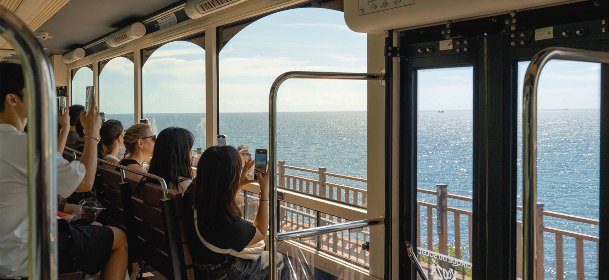
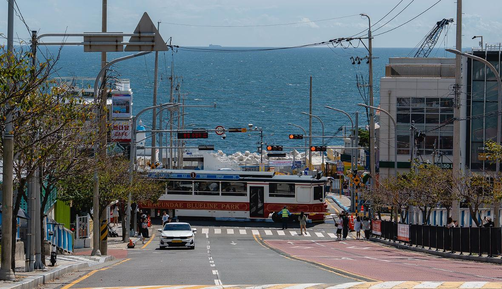
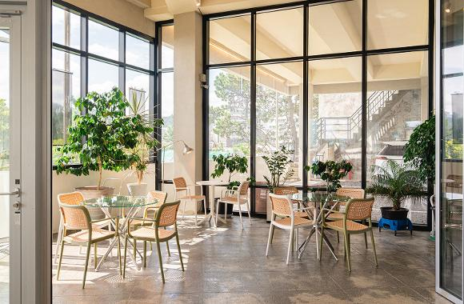
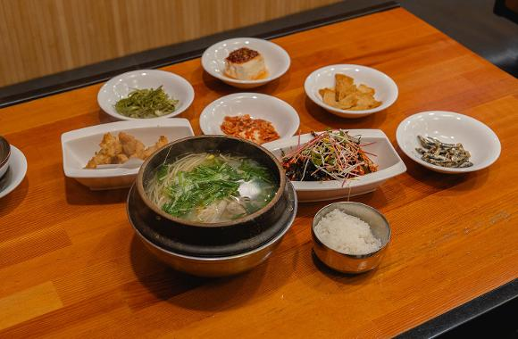
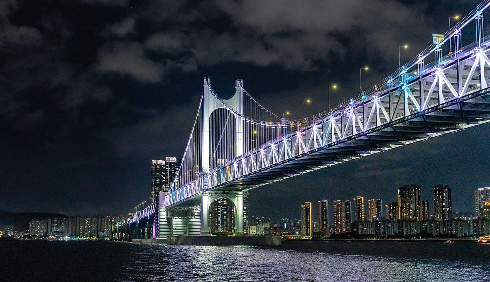
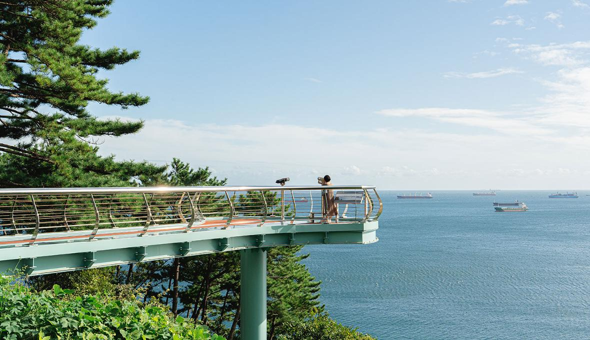
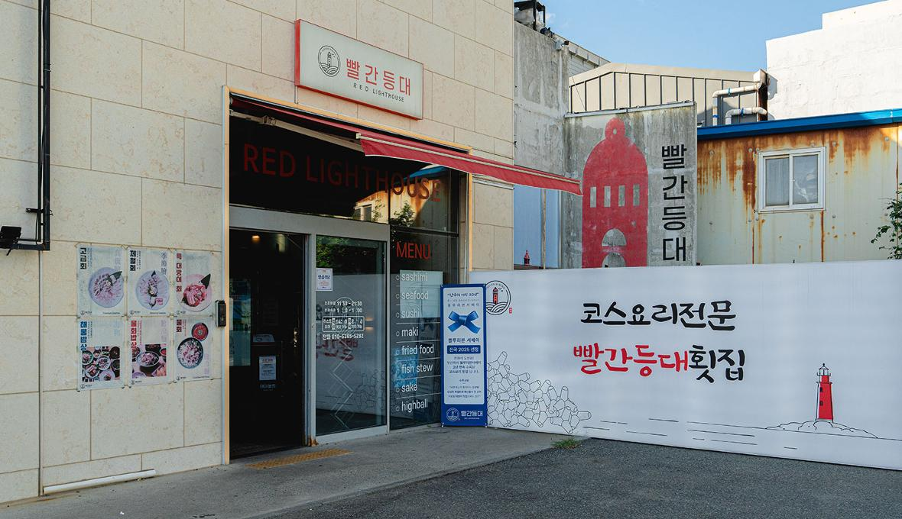
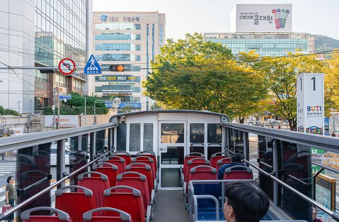

추석에 떠나는 "부산 가족여행" 1박2일 코스
풍성한 한가위를 맞아 온 가족이 함께 즐길 수 있는 부산 여행 코스를 소개합니다.
해돋이부터 야경까지, 푸짐한 1박 2일 코스 1일차 : 해운대 블루라인파크 해변열차 → 카페 윤 → 금수복국 해운대 본점 → 더베이101 요트투어
2일차: 영도하늘전망대 → 빨간등대 영도본점 → 부산시티투어

1일차 - 기장 해돋이와 해운대 바다의 낭만

"해운대 블루라인파크 해변열차" 미포~청사포~송정을 잇는 해변열차는 부산 바다 풍경을 한눈에 담을 수 있는 인기 체험 코스입니다. 바다와 맞닿은 레일을 따라 달리며 광안대교, 달맞이고개, 청사포 다릿돌 전망대까지 이어지는 멋진 풍광을 감상할 수 있습니다. 아이들은 기차를 타는 것만으로도 즐거움을 느끼고, 어른들은 푸른 바다를 바라보며 힐링할 수 있어 연휴 동안 가족 모두가 편안하고 즐거운 시간을 보낼 수 있습니다.

"카페 윤" 이쁜 오션뷰와 함께 맛있는 디저트를 시그니쳐 보라색 커피 윤커피를 드셔보세요! 1층에는 이쁜 굿즈, 2층에는 넓은 공간과 통유리, 테라스 좌석도 있어 탁 트인 뷰를 느낄 수 있습니다.

"금수복국 해운대 본점"부산 별미 복국을 맛볼 수 있는 해운대 금수복국 본점은 깊고 시원한 국물 맛으로 오래도록 사랑받아온 부산의 대표 맛집입니다. ‘미쉐린 가이드’에도 소개된 이곳은 취향에 따라 칼칼한 매운맛과 담백한 기본 맛을 선택할 수 있어 가족 모두가 만족할 만 하죠. 아이들은 부담없이 즐길 수 있는 복까스나 바삭한 복튀김을, 어른들은 복국이나 새콤달콤한 복무침을 곁들여 식사와 함께 반주를 즐길 수도 있습니다.

"더베이101 요트투어"1일차의 일정은 화려하고 낭만적인 해운대 더베이101 요트투어로 마무리 합니다. 광안대교와 마린시티의 불빛이 바다 위로 반짝이고, 시원한 밤바다 바람을 맞으며 즐기는 불꽃놀이는 연휴의 밤을 특별하게 완성합니다. 반짝이는 불빛과 파도 소리에 설레는 아이들, 넓은 갑판 위에서 함께 사진을 남기는 가족의 모습이 어우러져 잊지 못할 낭만적인 추억을 선사할 것입니다.
2일차 - 영도 전망과 도심 투어로 마무리

"영도하늘전망대"바다 위로 길게 뻗은 스카이워크가 인상적인 영도하늘전망대. 투명한 바닥 아래로 넘실거리는 파도와 탁 트인 바다 풍경은 가족사진을 남기기에 더없이 좋은 장소입니다. 망원경이 설치되어 있어 아이들이 바다 위를 오가는 배와 멀리 보이는 섬을 보며 즐길 수 있습니다. 영도하늘전망대에서 차로 3분 거리에 있는 중리노을전망대에서는 붉게 빛나는 빨간 등대를 감상할 수 있습니다. 가족과 함께 바닷바람을 맞으며 걷기 좋은 코스로 둘째 날 일정을 시작해 보세요.

"빨간등대 영도본점 트리축제"전 좌석이 바다를 향한 오션뷰로, 남항대교를 바라보며 신선한 해산물 요리를 즐길 수 있는 영도의 인기 맛집입니다. 푸짐하게 차려지는 해산물 한 상은 명절의 풍성함을 그대로 이어주면서도, 깔끔하고 담백한 맛으로 기름진 명절 음식을 먹은 뒤 입안을 상쾌하게 정리해 줍니다. 가족이 함께 앉아 바다를 바라보며 즐기는 한 끼로 연휴의 마지막을 특별하게 완성해 보세요.

"부산시티투어"부산 주요 명소를 한 번에 둘러볼 수 있는 부산시티투어는 가족 여행객에게 안성맞춤입니다. 평소 쉽게 경험하기 어려운 2층 버스를 타고 도심을 달리며 부산의 대표 관광지를 편리하게 둘러볼 수 있습니다. 부산항대교와 광안대교를 건너며 바다 위를 달리는 순간은 아이들에게 색다른 모험이 되고, 어른들에게는 여유롭게 앉아 도시와 바다 풍경을 감상할 수 있는 특별한 휴식이 됩니다. 명소별 정류장에서 자유롭게 승하차할 수 있어 가족의 속도와 일정에 맞춰 유연하게 여행을 이어갈 수 있는 것도 큰 매력입니다.